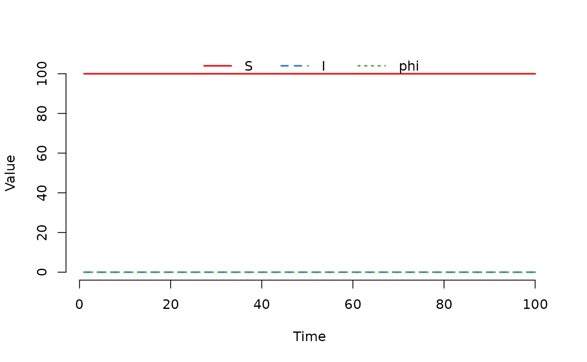
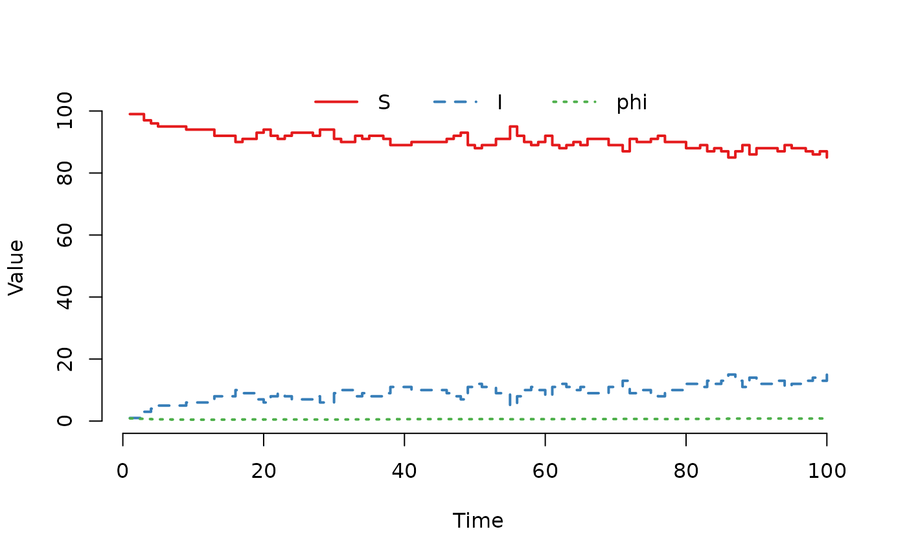

Update the initial continuous state v0 in each node
Arguments
- model
The model to update the initial continuous state
v0.- value
the initial continuous state in each node. Must be a
data.frameor an object that can be coerced to adata.frame. A named numeric vector will be coerced to a one-rowdata.frame. Each row is one node, and the number of rows inv0must match the number of nodes inmodel. Only the columns inv0with a name that matches a continuous state inv0in themodelwill be used
Examples
## Create an 'SISe' model with no infected individuals and no
## infectious pressure (phi = 0, epsilon = 0).
model <- SISe(u0 = data.frame(S = 100, I = 0), tspan = 1:100,
phi = 0, upsilon = 0.02, gamma = 0.1, alpha = 1,
epsilon = 0, beta_t1 = 0.15, beta_t2 = 0.15,
beta_t3 = 0.15, beta_t4 = 0.15, end_t1 = 91,
end_t2 = 182, end_t3 = 273, end_t4 = 365)
## Run the 'SISe' model and plot the result.
set.seed(22)
result <- run(model)
plot(result)

## Update the infectious pressure 'phi' in 'v0' and run
## the model again.
v0(model) <- data.frame(phi = 1)
result <- run(model)
plot(result)
